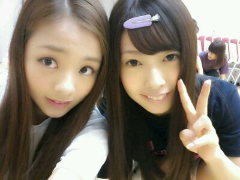
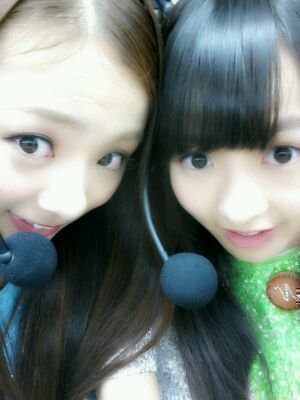

| 2012/10 22 Mon | 川村真洋 ろってぃーでーす☆ 長野 さーいこうっ!! |
はあ〜い♪ )))
ろってぃーでぇす !
たんたんろってぃー♪
パシャリ☆

今日は長野でのlive
お疲れ様でしたぁ〜(*^^*)
見に来てくださった
ファンの皆様
たまたま見かけて
立ち止まって見てくださった方々
スタッフの皆様
共演者の方々にメンバーの皆
今日は１日
ありがとうございました。
...
乃木坂46としては
初の長野県でしたね ^^/
2回 やらせて頂きました !
今日はアンダーメンバー
だけでの7曲★☆★
曲順で言うと
1,走れBicycle
2,おいでシャンプー
3,涙がまだ悲しみだった頃
4,狼に口笛を
5,左胸の勇気
6,ぐるぐるカーテン
7,会いたかったかもしれない
です !^_^
今日も
盛り上がってくれて
ほんっっとに、ありがとうっ☆!!!
皆様は 寒さをまひろ達に
感じさせない様にしてますねえ
^ω^)笑?
今日に、限らずさあ♪
だって 寒かろうが
始まった瞬間から
『汗』 だよ。わら
大好きっ ! みんなあっ〃∀〃
初っぱなと しめの
走バイと 会いかもは
生駒ポジをやらせて
頂き とても嬉しかったです。
それに、やっぱ
狼に口笛を歌い始めた瞬間は
盛り上がっていましたようっ!。
本当 今日は
めっっちゃくちゃっ!
楽しかったです(・∀・)
本当 皆に感謝っ ☆
長野の皆さん )))
乃木坂46,
これからも よろしくお願いします。
お焼き とか 蕎麦 が
有名何ですよね^^
帰りに お焼きを
生まれて初めて食べましたっ!
...
めちゃ
うまぃうまぃ
(・〜・)フャァー !!
後、ご当地キャラクターが
かわいかったぜぃ(> <)‥
あっ! それに
まひろ まりか かなの三人で
『スマイルダンスコンテスト』
と言う
ダンスコンテストにも
出させて頂きました ^^!
ダンスを見て
感想等を言う
役目だったんですけど、
本当 素晴らしかった,
どのチームも
めちゃくちゃ
かっこよかったです(ToT) ♪
何か 自分も
ダンスやっていたから
その時の頃を
思い出させてくれました...(´ω` =)
小 中 高と 同じ年位の子や
まだ 小さい可愛い子供達が
躍りだした瞬間、
いきなり 大人の色気
ぐいぐい出すわ
勢いすごいわ
表現力すごいわ、
だとか...
見ていて、
ああ‥
皆すごい頑張ってきたんだなあ。
と思いました。
怪我も、たくさんしてきて
ここまできたんだろなぁ〜´｀))
本当に今日は
長野に行けて
よかったーーー☆☆☆
カバちゃん♪
とってもいい人でした^^
かわいかったあ(⌒‐⌒)
...‥
まりまひ♪

マイク 大きい。
以上っ ろってぃー♪でしたっ ノシ